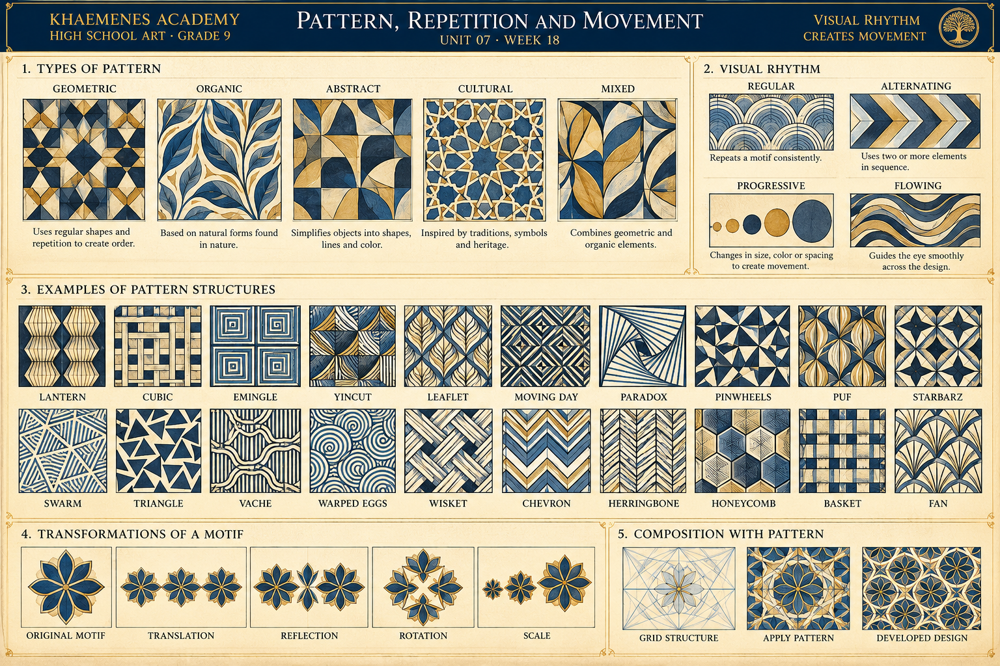

Motif and interval
A motif is a recurring form. The spacing between its repetitions is as important as the shape itself. Even intervals often feel steady; changing intervals can create shifts in visual tempo.
KHAEMENES ACADEMY · HIGH SCHOOL ART · GRADE 9
Unit 07 · Composition, Rhythm and Visual Communication
How can repetition, interval, variation and transformation turn a simple visual motif into an expressive pattern that suggests movement?
Continue Week 17's balance and hierarchy studies by designing visual rhythms and investigating the relationship between repeated forms and surrounding space.
A motif is a recurring form. The spacing between its repetitions is as important as the shape itself. Even intervals often feel steady; changing intervals can create shifts in visual tempo.
Regular, alternating, progressive and flowing rhythms offer distinct compositional possibilities. One artwork can combine several systems deliberately.
Translation, reflection and rotation change how motifs relate. Negative space can repeat as a secondary pattern; not every repeating design is a tessellation.
Regular: draw five seed shapes at equal intervals. Alternating: replace every second seed with a leaf. Progressive: enlarge the seed shapes from left to right while narrowing the gaps. Flowing: repeat the same motif along a gently curving path. Compare the direction, pace, negative-space intervals and visual emphasis in each strip. Annotate how changes in spacing or size affect the viewer's perception rather than claiming one universally correct interpretation.
Use this original Academy poster to compare geometric, organic, abstract and mixed patterns; four visual rhythms; examples of motif-based pattern structures; and the transformation of a motif through translation, reflection, rotation and changes of scale. The cultural-pattern example is an invitation to investigate attributed historical sources, not a claim that one design represents every tradition.

1 · Classify: identify a geometric, an organic and a mixed motif, describing observable differences. 2 · Rhythm: compare the intervals in the regular and alternating examples with the changing size in the progressive example. 3 · Flow: trace the directional movement in the flowing rhythm. 4 · Structures: choose two of the poster's pattern tiles and sketch their underlying repeat units. 5 · Transform: redraw one motif through translation, reflection and rotation, checking whether each transformation is represented accurately. 6 · Compose: use a grid to develop your own original pattern, preserving a first draft and annotating two revisions. Add the studies to your Week 18 portfolio evidence.
Study a textile, architectural frieze, botanical arrangement or credited artwork. Identify a repeating motif, the gaps between motifs and at least one change in size or direction. Make four annotated strips showing regular, alternating, progressive and flowing rhythm. Distinguish an observed visual feature from an interpretation of its meaning.
On graph paper, create a 4 × 4 grid. Design a simple motif using two geometric shapes and one curved line. Repeat it through translation; then test a reflection and a quarter-turn rotation. Record which transformations preserve the pattern unit and which introduce a new variation. Do not assume every repeating design is a gap-free tessellation.
Draw five seed-shaped forms along a horizontal baseline at equal intervals. In a second strip, alternate seeds and leaves. In a third, gradually enlarge each seed and reduce the gap, creating an accelerating visual tempo. In a fourth, place the forms along a gentle wave. Compare how the same motif communicates stability, alternation, growth and flow.
Create a 20 × 30 cm original pattern panel, textile concept, book-cover border or architectural screen. Include a clearly defined motif, two contrasting rhythm systems, intentional negative space and a focal variation. Make three thumbnails, select one and produce a full-size draft. Ask a viewer to describe the rhythm they perceive; revise at least two decisions involving spacing, contrast, alignment or repetition.
Research two credited pattern traditions or works from distinct historical or cultural contexts. Use artist, museum or institutional sources and record maker (if known), title or description, date, medium, institution or URL, and access date. Explain the specific visual structure without making unsupported claims about symbolism. Preserve initial and revised studies with a 150–250 word reflection.
Keep the first and revised versions. Mark motif, intervals, negative-space rhythm, focal variation and chosen transformations.
Evidence saves to this browser, not an authenticated Academy account. Export a backup and confirm learner identity before sharing.
Observed rhythm and vocabulary (20) · Motif development and four rhythm experiments (25) · Original pattern, visual hierarchy and negative space (25) · Critique and documented revision (15) · Research, reflection and portfolio evidence (15). Educator review remains separate from formative practice.
Five randomized questions from fifteen lesson-aligned items. Four correct meets the 80% practice target. Submitted answers lock; retakes begin a fresh attempt. Browser-local results do not independently authorize Academy progression.
Archive your motif experiments, original artwork, revisions and research in your portfolio. Week 19 will bring together rhythm, hierarchy and visual communication in a culminating composition.
Return to Unit 07 overview